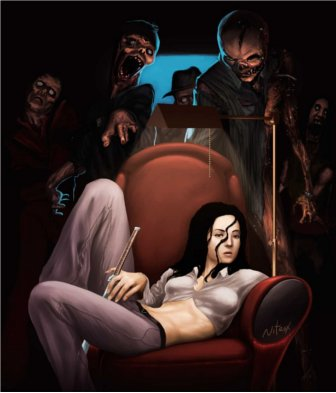

Z5 Zombie Survival GDD
Intro

Zombie Apocalypse breaks, world ends in 6 days
Player control a group of 5 random characters
There is a surviving chance. Somewhere
Each char have 5 attributes:
- Strength
- Speed
- Perception
- Speech
- Intelligence
And 3 status
- Hunger
- Vitality
- Fatigue
One of 3 natures, based on its attributes
- Aggressive
- Adaptive
- Peaceful
The whole game is based on 4 actions
- Scavenge
- Ambush
- Rest
- Move
TAGS: (Story Telling, Puzle, Strategy) (Survivors. Guns. Apocalypse) (Browser. Turns.)
Setup
The game starts on a monday.
During player’s first access, he gets assigned a random group of 5 chars. He may choose to roll 2 more times,
Each roll applies for a complete randomization all characters, including name, avatar, attributes and starting items.
Male-Base Characters: str: 2 spd: 2 prc: 1 spc: 1 int: 1
Female-Base Characters: str: 1 spd: 1 prc: 2 spc: 2 int: 1
For each Char:
- For each attribute, a dice is rolled, adding 1-3 points
- Each char gets a weapon, lv 1 - 4
- Food: 70% chance, lv 1-3
- Remedy: 30% chance, lv 1-3
- Utility: --next version
Map
The map is initially unknown, and gets incrementally discoved through exploration.
The group starts the game at some random map position
Whichever point is, there is a real chance of the group reaching the rescue point
The distance from the closest to the farthest player start point to the rescue point varies approximately 20%
The map is generated randomly. There should be no impassable barriers in the first version
Players should be positioned next to each other.. 1~2 days distance to the closest.
Buildings are placed at random distances, each have their own kinds of items
- houses
- meds, guns, cloth stores
- offices
- transports
- research institutes
- schools
Attributes
Assigned during setup, they are permanent.
They may be temporarily altered by status and items
- Strength:
- Influence melee weapons effectiveness
- Speed:
- Determine the range of scavenging as well as chance to scape dangerous situations
- Perception:
- Capacity of detecting zombies, traps and ambushes. Range of sight. Item spotting ability
- Speech:
- Capacity of convincing others to trade as well as acquiring info, the diplomatic way
- Intelligence:
- Ability of finding clues. As well of capabilities of deciphering then.
Status
Affects attributes, highly unstable.
Hunger: Influences all stats alike. Vary both color and tags; famished(red), starving, hungry, satisfied(light yellow), full(green)
Vitality: May incapacitate the char of taking actions, several: Healthy, wounded leg or arm( -2 str / spd), very hurt (disabled), recovering( -1 to str, spd, prc ), dead(you know)
Fatigue: Have random impact over attributes, based on level. Include: Rocking, bit tired, tired, exhausted.